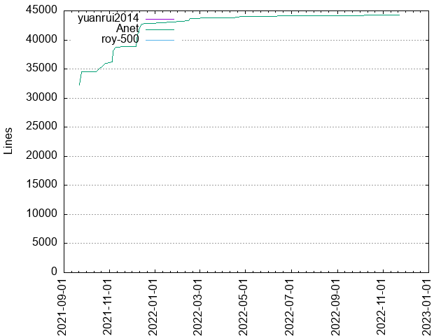

Authors
| Author | Commits (%) | + lines | - lines | First commit | Last commit | Age | Active days | # by commits |
|---|
| yuanrui2014 | 78 (62.40%) | 0 | 0 | 2021-09-24 | 2022-11-23 | 424 days, 15:41:30 | 44 | 1 |
| Anet | 46 (36.80%) | 44258 | 12206 | 2021-09-22 | 2022-11-09 | 413 days, 7:13:50 | 36 | 2 |
| roy-500 | 1 (0.80%) | 0 | 0 | 2022-09-01 | 2022-09-01 | 0:00:00 | 1 | 3 |


| Month | Author | Commits (%) | Next top 5 | Number of authors |
|---|
| 2022-11 | yuanrui2014 | 7 (70.00% of 10) | Anet | 2 |
| 2022-09 | yuanrui2014 | 1 (50.00% of 2) | roy-500 | 2 |
| 2022-08 | yuanrui2014 | 1 (50.00% of 2) | Anet | 2 |
| 2022-07 | yuanrui2014 | 3 (75.00% of 4) | Anet | 2 |
| 2022-05 | yuanrui2014 | 2 (50.00% of 4) | Anet | 2 |
| 2022-04 | yuanrui2014 | 6 (54.55% of 11) | Anet | 2 |
| 2022-03 | yuanrui2014 | 3 (75.00% of 4) | Anet | 2 |
| 2022-02 | yuanrui2014 | 5 (71.43% of 7) | Anet | 2 |
| 2022-01 | yuanrui2014 | 12 (70.59% of 17) | Anet | 2 |
| 2021-12 | yuanrui2014 | 13 (56.52% of 23) | Anet | 2 |
| 2021-11 | yuanrui2014 | 10 (62.50% of 16) | Anet | 2 |
| 2021-10 | yuanrui2014 | 11 (64.71% of 17) | Anet | 2 |
| 2021-09 | yuanrui2014 | 4 (50.00% of 8) | Anet | 2 |
| Year | Author | Commits (%) | Next top 5 | Number of authors |
|---|
| 2022 | yuanrui2014 | 40 (65.57% of 61) | Anet, roy-500 | 3 |
| 2021 | yuanrui2014 | 38 (59.38% of 64) | Anet | 2 |
| Domains | Total (%) |
|---|
| users.noreply.github.com | 79 (63.20%) |
|---|
| qq.com | 46 (36.80%) |
|---|